Selection Lists from Web Services (DataLinq)¶
DataLinq is part of the WebGIS API and is mainly used to create reports based on various data sources. In addition, parameterized queries can be retrieved as JSON via a REST interface. This REST interface can also be used as a source for selection lists.
Advantages over Other Sources¶
Compared to the methods shown previously, there is no need here to specify a connection string or an SQL statement for each selection list. This has several advantages: ✅ The CMS parameterization remains free of connection settings and database passwords. ✅ A list defined once can be reused. ✅ Changes to the list take effect immediately across all edit forms.
DataLinq can use various data sources as the basis for a REST interface: - Database queries - WebGIS API queries against map services parameterized via the WebGIS CMS - Simple (plain-text) lists
In this example, a plain-text list is used. A database is not required for this – similar to static selection lists, but with the advantage that changes to the list take effect directly.
Note
Basic knowledge of DataLinq is assumed in this section.
Creating a DataLinq Endpoint¶
First, a new DataLinq endpoint is created:
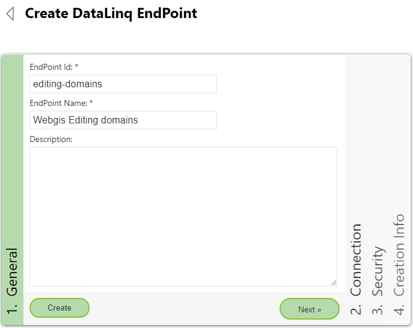
PlainText is specified as the type. A connection string is not required for this type:
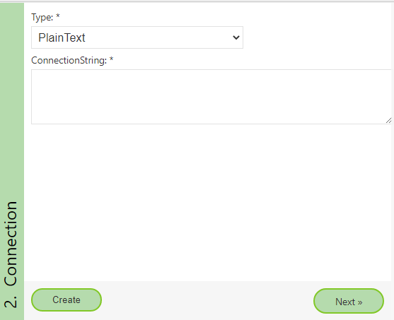
Under Security, the Reset buttons can be used to create new access tokens.
If the lists should not be publicly accessible, they must be protected.
If the client is not a user but an application, access is not via user/password,
but via tokens.
The client that retrieves the lists in this case is the WebGIS application:
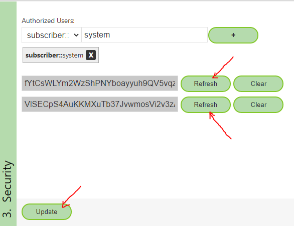
Creating a DataLinq Query¶
In the next step, a query is created under the endpoint:
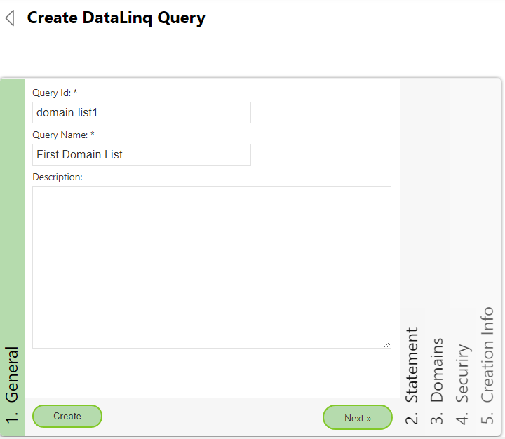
Then the editor can be opened under Statement:
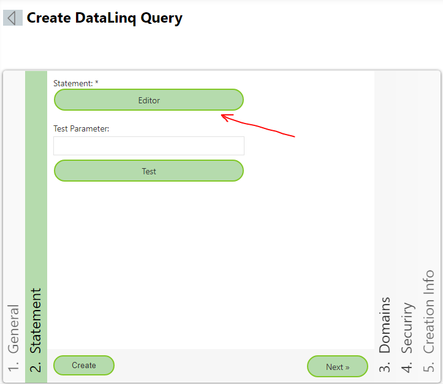
If the data source is a database, an SQL statement can be stored here. For the PlainText type, the values for the list are entered directly as text:
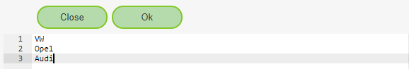
Formatting the Values¶
Each line corresponds to an entry in the selection list.
The value is used both as the “value” and as the “label” (display name).
If “value” and “label” should differ, they are separated with
::
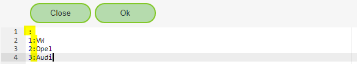
Note
A line with only a
:adds an empty option to the selection list.If the value “0” should be stored for empty values in the geodatabase, you can enter
0:.Empty lines are ignored.
After entering the values, close the editor with “Close” and switch to the Security area.
The user * should be added here.
This means that any client that has access to the endpoint can also retrieve the query.
The permissions could be further restricted – for this example, however, it is enough to secure the endpoint:
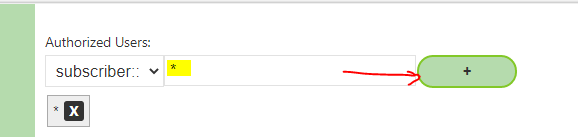
Finally, the query is created with “Create”.
Testing the Query¶
To test it, the query dialog can be opened: Statement → Test
The result should look as follows:
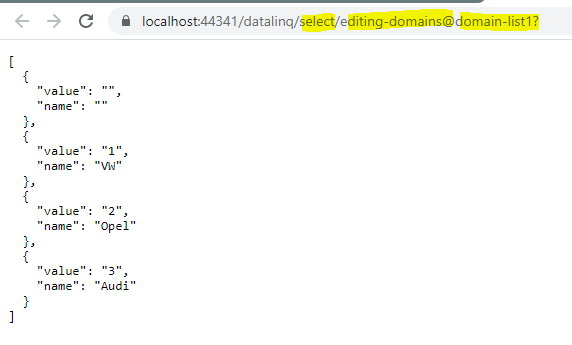
If the link is opened in another browser or an incognito window, an error message appears:
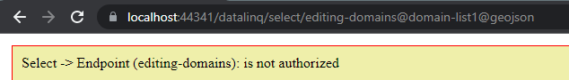
This is because access to the endpoint is not public. For the client to be able to access the query later, one of the previously created tokens must be passed.
There are two valid methods for this:
http://...../datalinq/select/endpoint(ENDPOINT-TOKEN)@query(QUERY-TOKEN)
http://...../datalinq/select/endpoint@query?endpoint_token=ENDPOINT_TOKEN&query_token=QUERY_TOKEN
Since only endpoint tokens were defined in this example, the URL can be adjusted accordingly. The query then also works in an incognito window:
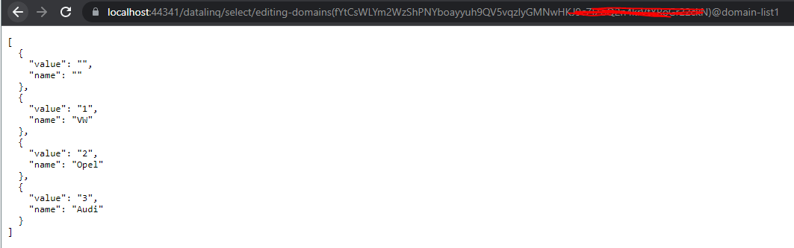
This link must then be entered into the CMS.
Note
It does not matter which of the two tokens is used. Both tokens are equivalent. The reason for having two separate tokens is that a seamless switch between them remains possible later.
Integrating the Selection List in the CMS¶
For the respective domain field (edit form), the link to the query is entered under ConnectionString:
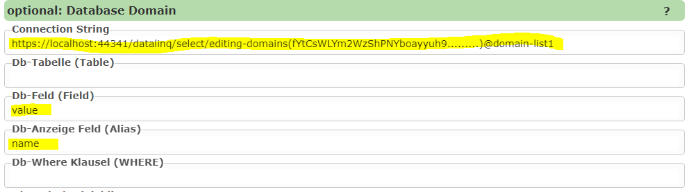
Note
Since the WebGIS application cannot log in to DataLinq with a user/password, a token must be specified here.
In principle, any web service that returns a JSON array can be used here.
The array must contain objects with the properties
valueandname.If different property names are used, these can be specified via
DB fieldandDB display field.In this example, the values already match the default values, so they can be left empty.
Cascading Selection Lists¶
Selection lists can also be made dependent on a parent list.
For the PlainText type, this is implemented via indentation (2 spaces):
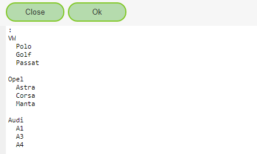
If the query is called without parameters, the list with all makes is returned:
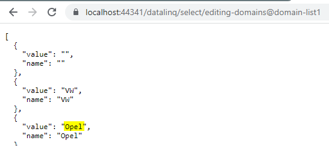
If only a specific make should be filtered, the parameter level0={value} can be passed:
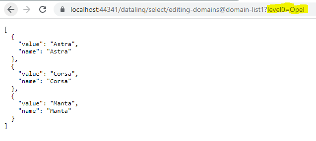
Note
Further indentation allows any number of levels to be defined.
Filtering is then done via the URL with parameters:
level0={value0}&level1={value1}&level2={value2}
In the CMS, the restriction can be defined via the “DB Where Clause”:
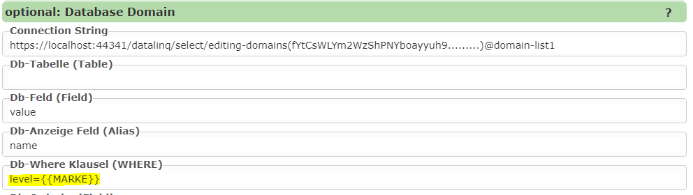
Note
Here, MARKE is the database field into which the make is written via the selection list.